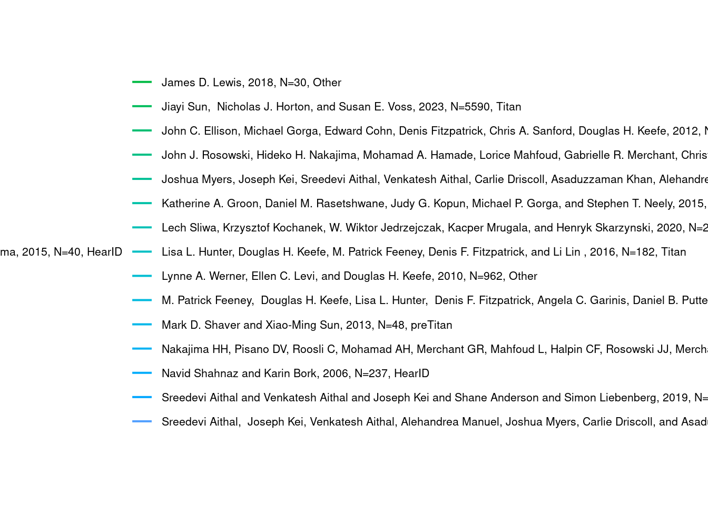

The goal of this analysis is to explore how mean absorbance varies across studies and demographic groups within the Wideband Acoustic Immittance (WAI) database. To begin with, I will I will recreate Figure 1 by analyzing the trends, focusing on mean absorbance values across a specific range of frequencies.
library(RMariaDB)library(tidyverse)
Warning: package 'tidyverse' was built under R version 4.2.2
Warning: package 'lubridate' was built under R version 4.2.2
── Attaching core tidyverse packages ──────────────────────── tidyverse 2.0.0 ──
✔ dplyr 1.1.4 ✔ readr 2.1.5
✔ forcats 1.0.0 ✔ stringr 1.5.1
✔ ggplot2 3.5.1 ✔ tibble 3.2.1
✔ lubridate 1.9.3 ✔ tidyr 1.3.1
✔ purrr 1.0.2
── Conflicts ────────────────────────────────────────── tidyverse_conflicts() ──
✖ dplyr::filter() masks stats::filter()
✖ dplyr::lag() masks stats::lag()
ℹ Use the conflicted package (<http://conflicted.r-lib.org/>) to force all conflicts to become errors
library(ggplot2)con_wai <-dbConnect(MariaDB(), host ="scidb.smith.edu",user ="waiuser", password ="smith_waiDB", dbname ="wai")figure1_data <-dbGetQuery(con_wai, "WITH StudyFrequencies AS ( SELECT m.Identifier, p.AuthorsShortList, p.Year, m.Instrument, m.Frequency, AVG(m.Absorbance) AS MeanAbsorbance, COUNT(DISTINCT m.SubjectNumber, m.Ear) AS UniqueEars FROM Measurements m JOIN PI_Info p ON m.Identifier = p.Identifier WHERE m.Frequency IN ( 210.938, 234.375, 257.812, 281.250, 305.688, 330.125, 354.562, 379.000, 403.437, 427.875, 452.312, 476.750 ) GROUP BY m.Identifier, p.AuthorsShortList, p.Year, m.Instrument, m.Frequency)SELECT Identifier, AuthorsShortList, Year, Instrument, Frequency, MeanAbsorbance, UniqueEarsFROM StudyFrequenciesORDER BY Identifier, Frequency")# Create custom legend labelsfigure1_data <- figure1_data %>%mutate(StudyLabel =paste( AuthorsShortList, Year, paste0("N=", UniqueEars), Instrument, sep =", " ))ggplot(figure1_data, aes(x = Frequency, y = MeanAbsorbance, color = Identifier)) +geom_line(size =1) +geom_point(size =2) +scale_x_continuous(breaks =c(210.938, 281.250, 354.562, 427.875, 476.750),labels =c("210", "281", "355", "428", "477") ) +scale_y_continuous(limits =c(0, 0.5)) +labs(title ="Mean Absorbances for WAI Studies",x ="Frequency (Hz)",y ="Mean Absorbance",color ="Study" ) +theme_minimal() +theme(legend.position ="right",legend.text =element_text(size =8),legend.key.height =unit(1, "lines") ) +guides(color =guide_legend(ncol =1))
Warning: Using `size` aesthetic for lines was deprecated in ggplot2 3.4.0.
ℹ Please use `linewidth` instead.
Warning: Removed 1 row containing missing values or values outside the scale range
(`geom_line()`).
Warning: Removed 1 row containing missing values or values outside the scale range
(`geom_point()`).
dbDisconnect(con_wai)
The graph above,illustrates mean absorbances for different WAI studies across a specific frequency range with each line representing a specific study. For most of the studies, there is a slight increase in the mean absorbanses at 281Hz.
For the second aspect of this analysis, I will explore group differences by sex and race, investigating how these demographic variables influence mean absorbance trends. And then, I will calculate mean absorbance for each group across frequencies and visualize these trends with labeled plots.
library(DBI)library(RMariaDB)library(ggplot2)con_wai <-dbConnect(MariaDB(), host ="scidb.smith.edu",user ="waiuser", password ="smith_waiDB", dbname ="wai")joined_data <-dbGetQuery(con_wai, "WITH StudyDetails AS ( SELECT m.Identifier, p.AuthorsShortList, p.Year, s.Sex, s.Race, m.AgeCategory, m.Frequency, AVG(m.Absorbance) AS MeanAbsorbance, COUNT(DISTINCT m.SubjectNumber) AS NumSubjects, COUNT(DISTINCT m.SubjectNumber, m.Ear) AS UniqueEars FROM Measurements m JOIN Subjects s ON m.SubjectNumber = s.SubjectNumber JOIN PI_Info p ON m.Identifier = p.Identifier WHERE m.Frequency IN ( 210.938, 234.375, 257.812, 281.250, 305.688, 330.125, 354.562, 379.000, 403.437, 427.875, 452.312, 476.750 ) GROUP BY m.Identifier, p.AuthorsShortList, p.Year, s.Sex, s.Race, m.AgeCategory, m.Frequency)SELECT * FROM StudyDetailsORDER BY Identifier, Frequency")sex_plot <-ggplot(joined_data, aes(x = Frequency, y = MeanAbsorbance, color = Sex)) +geom_line(aes(group =interaction(Sex, Identifier))) +geom_point() +labs(title ="Mean Absorbance by Sex Across Frequencies",x ="Frequency (Hz)",y ="Mean Absorbance",color ="Sex" ) +theme_minimal()race_plot <-ggplot(joined_data, aes(x = Frequency, y = MeanAbsorbance, color = Race)) +geom_line(aes(group =interaction(Race, Identifier))) +geom_point() +labs(title ="Mean Absorbance by Race Across Frequencies",x ="Frequency (Hz)",y ="Mean Absorbance",color ="Race" ) +theme_minimal()print(sex_plot)

print(race_plot)
dbDisconnect(con_wai)
The ” Mean Absorbances by Sex Across Frequencies” graph illustrates how mean absorbance varies across frequencies for different sex groups. The variation in absorbance between the sexes is visible across frequencies.
The “Mean Absorbance by Race Across Frequencies” graph also shows the mean absorbance across frequencies for different races.
To recreate Figure 1 from Voss (2020), I queried the WAI database to extract data, filtered for relevant frequencies and combined measurements with authors, year, and instrument. I then calculated the mean absorbance and the number of unique ears for each study and frequency and then used a line plot to show the relationship.
To analyze group differences, I examined the impact of sex and race on mean absorbance across frequencies. U I grouped data by study, sex, race, and frequency, calculating mean absorbance for each group. I then generated two plotsto visualize these trends.
DATA SOURCE:https://www.science.smith.edu/wai-database/